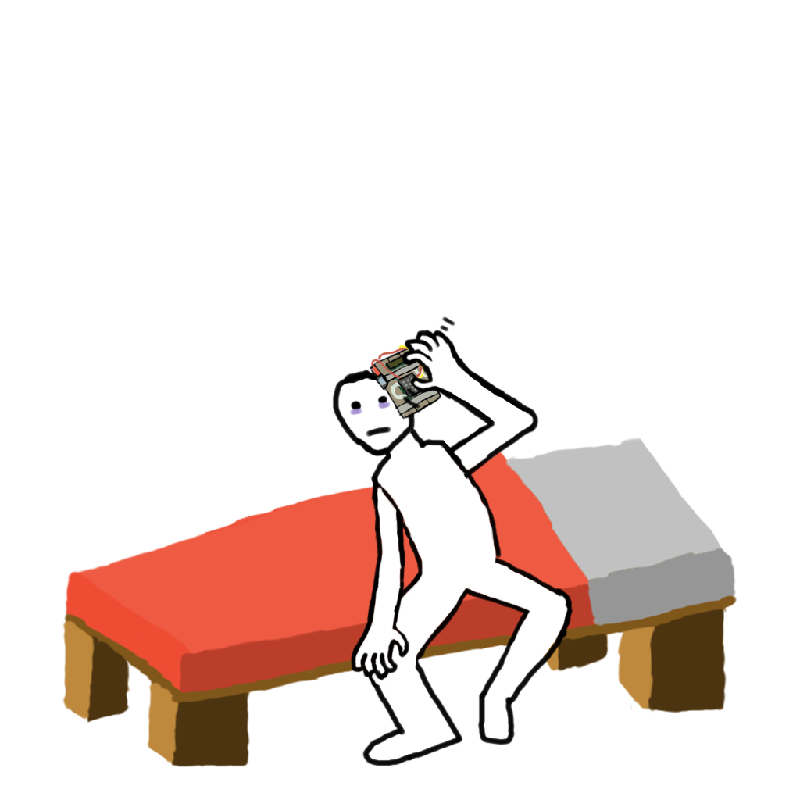

There was a time in my life when I was playing League of Legends for hours every day. It was a very special time hanging out with the boys but I realized League of Legends was a bad game for my psyche.
I have also played Valorant, which was pretty fun for a while and I enjoyed that, but I stopped playing because I didn't want chinese spyware on my computer -- how wrong I was.
I uninstalled all of Riot Game's software thinking nothing would go wrong and everything worked as normal for a while, until one day my computer started slowing down for seemingly no reason. I thought it was Windows 11 but then I realized that a mega-corporation would never make my products worse -- only better. I lived with my slow computer for a while as I could not find the problem.
Then seemingly out of no-where I accepted a challenge from a friend in attempts to unlock his "Archive". I downloaded the Riot Launcher and League of Legends again. The second I ran the game, my computer actually sped up from what it was originally. I was beyond amazed so I checked my task manager, and my god, the sight was a real tear-jerker: Under the CPU usage column, I saw the golorius flag of China. By now I was crying my eyes out: The CCP fixed my computer! I grabbed a box of tissues to recover from the ever glorious sight of the CCP.
After a mega corporation in China fixed my computer problem the only way I could show my support was to hang a chinese flag on my wall. Coincidentally after the flag was hung, I could no longer speak bad about the government in China (but why would I after Tencent and Riot Games fixed my computer issues?).
My life has only improved from playing Riot Games, the only problems in my life that I experience after downloading the launcher was I now had to regularly check my social credit, which is fine -- Im a well-behaved follower. But I also had a splitting headache only days after I let the Chinese Government back into my life.
This headache was awful for the first 2 days but I got use to it. I also noticed whenever I started thinking about Taiwan, my head starting hurting and I could hear a faint beeping -- but after installing League of Legends I became a super China supporter, so I knew Taiwan wasn't even on the map.
The best part about having the Riot Launcher on your desktop is that you become a Chinese, state mandated racist. There is no way around this, you simply must live with hating others for no reason. On the other hand, being a state mandated racist has its perks -- Being that you are playing League of Legends, being a racist is part of the game, so they decided to make it easier to adapt to the community. Another perk is since you have League of Legends on your computer, you don't need to go outside and reveal your racism, you can just do that on r/Leagueoflegends from the comfort of your home!
Though I would never critize the Chinese government, as I physically cannot speak bad about them anymore, I would tread carefully if you think you are better than the glorious CCP -- Once you drop below 700 social credit, you can no longer launch any of the games on the Riot Launcher, so be careful!
I would also like to mention how great the inclusion of kernel level anti-cheat is. No one likes linux users anyways, plus they would disrespect the leader of China and spread lies such as: "They have access to all of your computer", or (get this) "security vulnerabilities", as if perfect China would intentionally harm people, clearly they need to send you to the gulag. I mean really, just look at this schizo-poster, Riot Games and China would never hurt people?
Late in the dead of night I was pondering about if China was the perfect place, and my dirty, irrational thoughts lead my astray. I was thinking the United States was perfect, but just as I had this thought, I looked out my window to see what looked to be a glare on my neighbors rooftop. The glare made me realize that America is not a safe place to live and China was actually perfect, and believe it or not, as soon as my irrational USA-pilled thoughts left my clearly empty cranium, the glare from the rooftop went away. China actually protected me from being assassinated in my own home, and I have Riot Games to thank. God bless Chinese mega-corporations